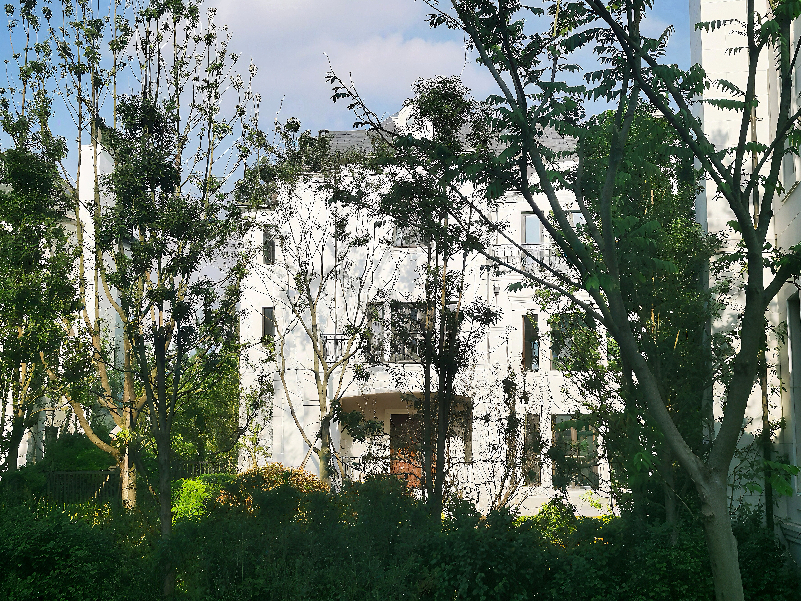
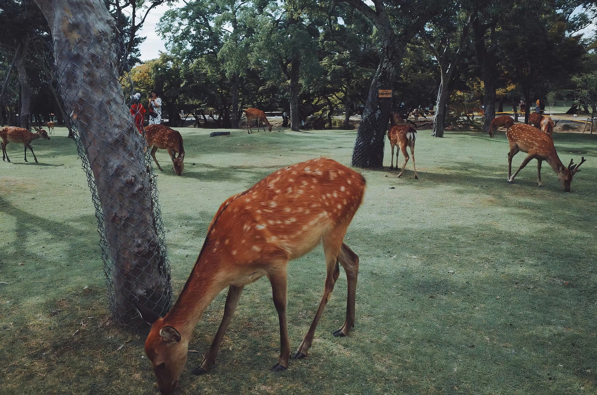
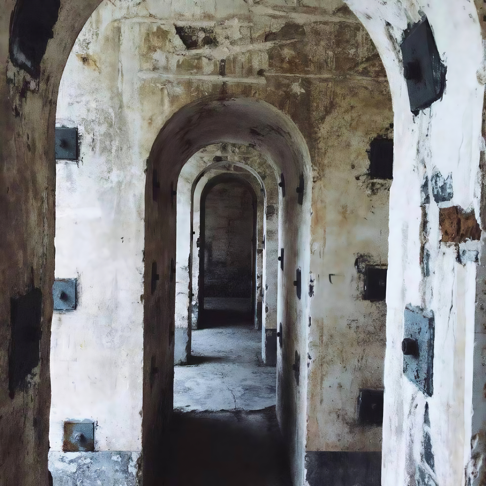
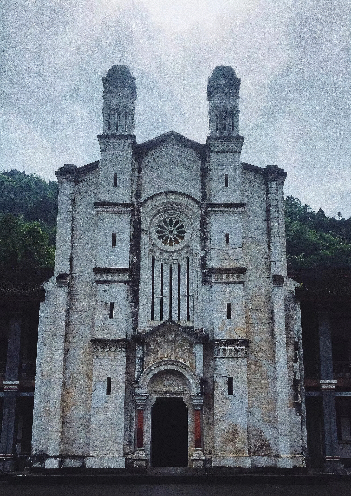
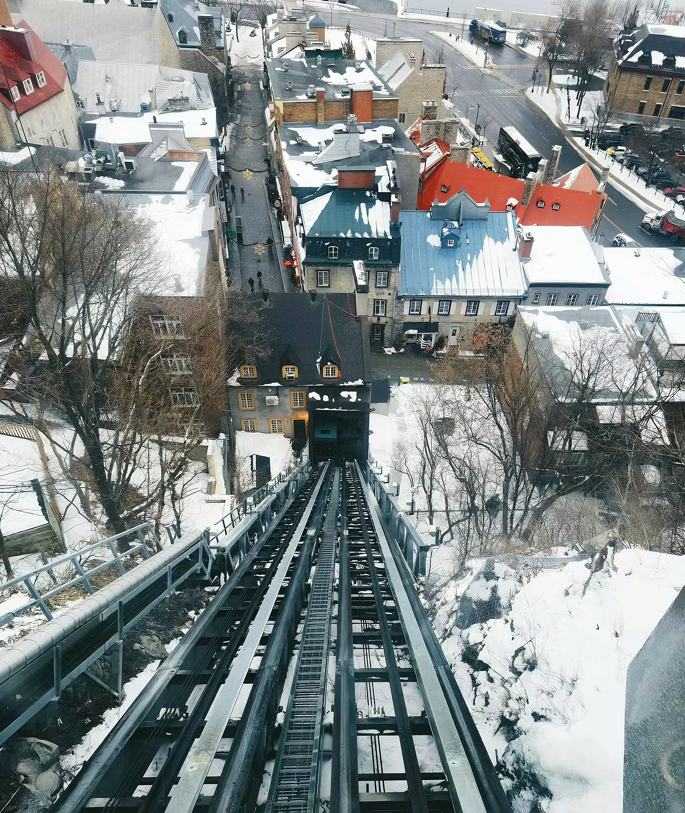
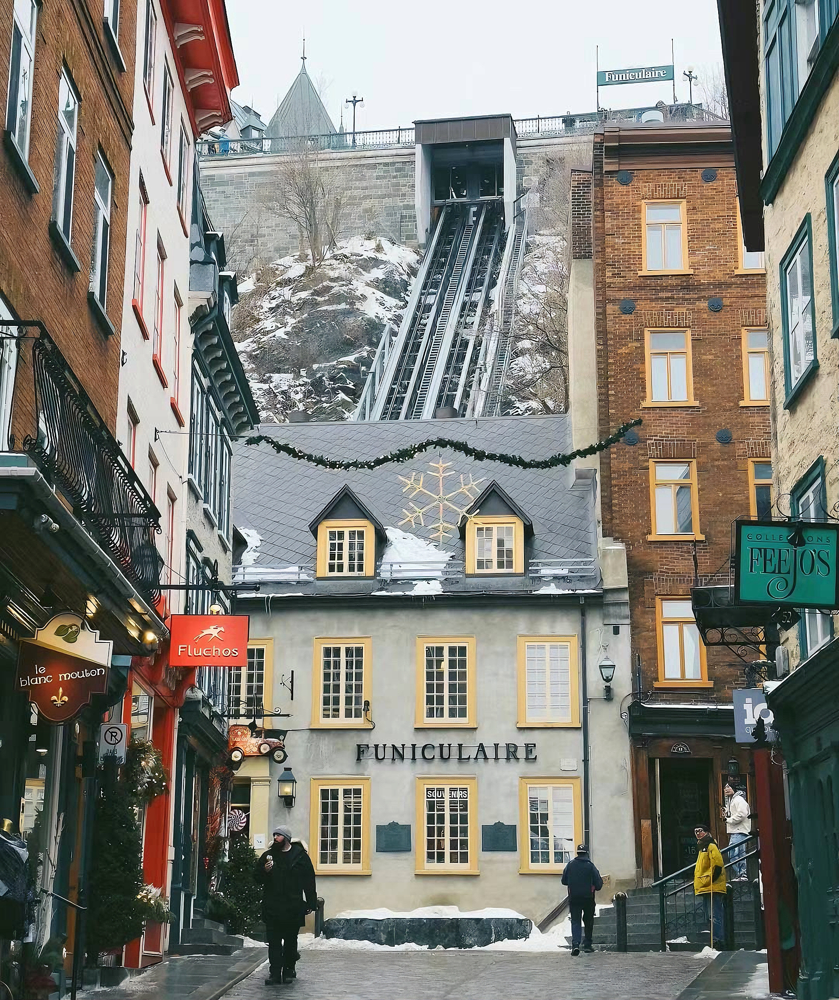

Fan Page UI Design
Created a homepage design for a fan page, focusing on soft visual aesthetics, image layering, and a clean editorial layout.
A collection of my recent projects, photography, and experiments.
Created a homepage design for a fan page, focusing on soft visual aesthetics, image layering, and a clean editorial layout.
Translated the visual design into a responsive frontend layout that works across different screen sizes while preserving the overall style.

A familiar residential space framed by trees, where everyday life meets soft natural light.

Captured in Nara, a quiet moment where nature and human space gently overlap.

An abandoned academy corridor where layered arches hold traces of time and memory.

A forgotten structure within an old academy, shaped by decay, symmetry, and stillness.

Overlooking Old Québec, strong lines lead through a layered winter cityscape.

A street in Old Québec where architecture, distance, and winter light create depth.